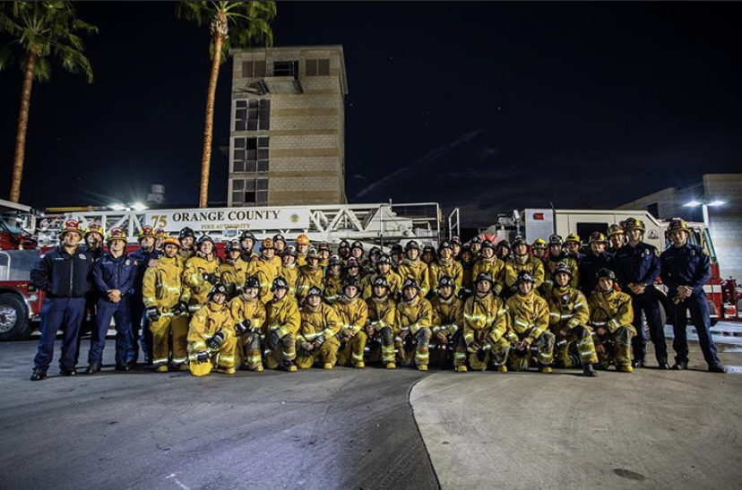
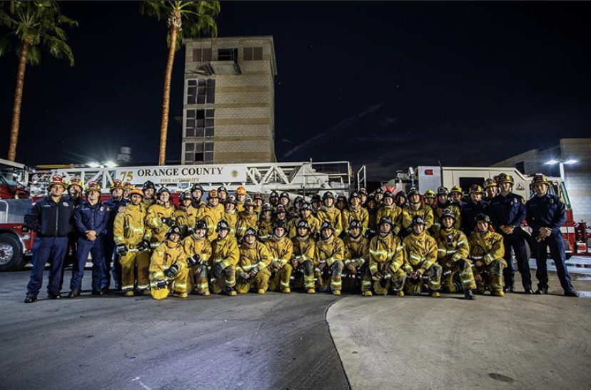

Being an Explorer will help you big time in the future because it is really hard to be accepted in the service. The
more experience you have the most likely you'll be accepted.
Anaheim Fire and Rescue together with Learning for Life is offering young adults between
the ages of 14 through 21 years of age the opportunity to become part of Anaheim Fire and Rescue’s
Explorer Post. If you enjoy teamwork, learning new skills in a fun and exciting environment, and are
interested in jump starting your career in the fire service, then we have an opportunity for you.
Fire Explorers learn:
Firefighting skills,
Hose lay evolutions,
Ladder techniques,
Salvage operations,
Wildland firefighting procedures,
Proper use of tools and equipment,
Basic first aid, and
Leadership skills that can be applied to any career
 
